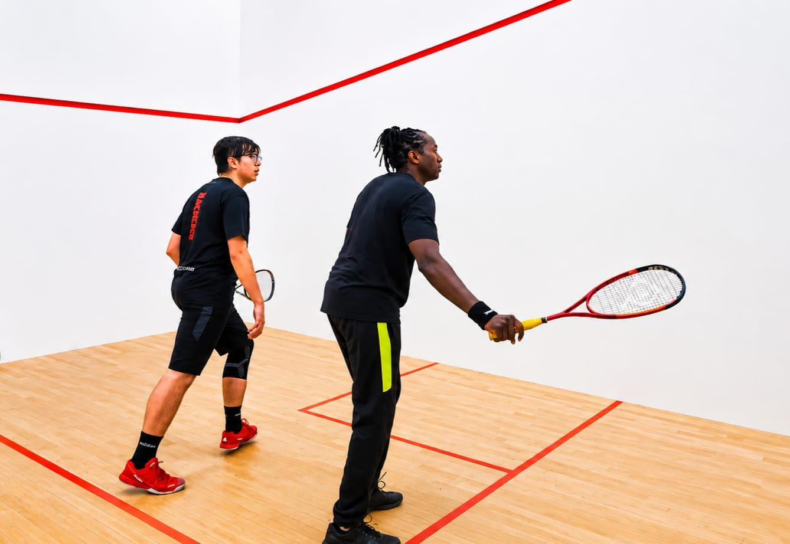
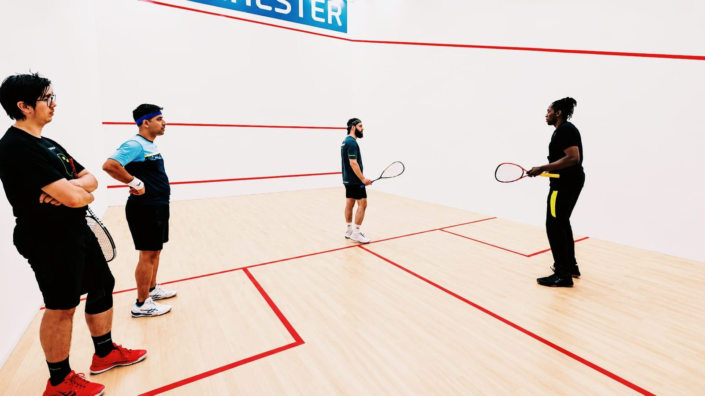
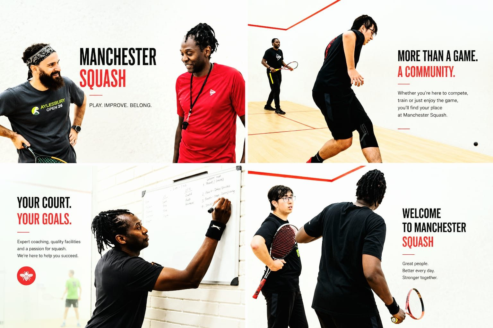

South Manchester & Cheshire
Professional coaching from Mas Selisho, former world top-100 player, Commonwealth Games competitor and England Squash qualified coach. From absolute beginners to professional level, adults and juniors alike.

How it works
Every player is different, so every plan is bespoke. Here's the simple three-step approach behind all Manchester Squash coaching.
An on-court assessment is usually suggested so that I can analyse your current ability and pinpoint your strengths, assets and desires.
I will then review your strengths and areas to improve on. This enables me to design a bespoke coaching plan to maximise your potential.
A combination of hard work and great coaching will result in you achieving your goal.
Why Manchester Squash?

What we offer
Individual, pairs and group sessions tailored to your game, whether you're picking up a racket for the first time or competing in leagues.
Coaching & prices →Structured programmes with skills, fitness drills and games, so kids have fun while developing skills that carry into every sport.
Junior coaching →Sports and deep-tissue massage, injury rehabilitation and pre/post-match treatments through MSSports Massage & Rehab.
Treatments →
What clients say
To anybody thinking of hiring Mas, just do it! The coaching he offers is amazing, and on top of that, the support is outstanding! I came to him with a few weak points in my game, he managed to iron those out in no time!
I had not picked up a squash racket for over 16 years. Your patience and excellent support and feedback has been wonderful. Thank you for all of your help!
Thank you for bringing out the best of me! My game is now on a whole new level.